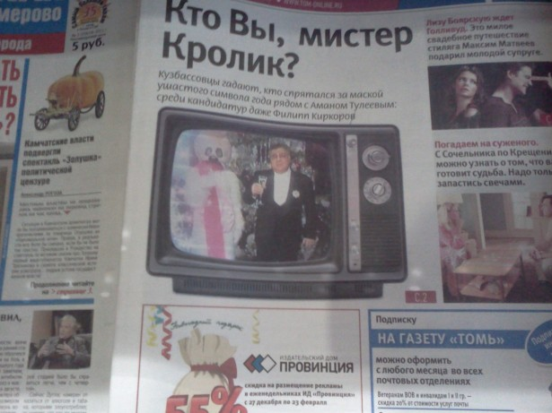

Ввиду того, что Новый Год встречал на площади кое-что интересное я все-таки пропустил. Губернатор Кузбасса Аман Тулеев поздравлял кузбассовцев оказывается не один, а с… зайцем.
Честно говоря, когда я увидел видео в блоге Штукатуркина я был на 100% уверен, что это фейк, монтаж.
Ну понятно, что вроде символ. Ну понятно что мог бы атмосферу сделать праздничной. Но настолько? Сегодня в «Палате» увидел «Томь»

Обложка газеты убедила меня что это была шутка не мастеров AfterEffect'а, а мастеров PR. Заяц выше Тулеева, розов, похож на алкоголика и ужасен. Остается только надеяться, что хотя бы снимали его отдельно.